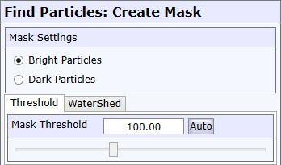
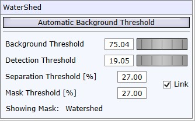
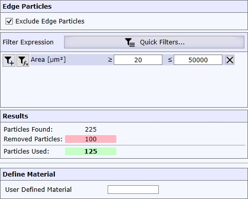

查找颗粒

亮色 / 暗色颗粒 （自动设置）
亮色颗粒：查找比背景更亮的颗粒（例如暗场图像）
暗色颗粒：查找比背景更暗的颗粒（例如明场图像）
通过阈值掩模
定义用于检测颗粒的亮度级别。
自动
计算自动阈值（启动时也使用此方法）。
自动阈值使用"大津法"： 维基百科链接
通过分水岭掩模
此算法可用于解决颗粒检测中的两个问题。
- 亮色和较暗的颗粒都根据颗粒亮度使用单独的阈值进行掩模。
- 非常靠近彼此颗粒可以被分离。

为获得最佳结果，请按以下顺序逐步定义参数：
背景阈值
为背景定义一个阈值。
更改此参数时，预览将暂时显示背景掩模。
检测阈值
只有高于此阈值（背景阈值 + 检测阈值）的区域才会被用于查找颗粒。
更改此参数时，预览将暂时显示检测掩模。
关联
如果选中关联复选框，分离和掩模阈值将设置为相等。如果您只关心为每个颗粒设置单独的阈值，这将很有用。
分离阈值
在计算过程中，颗粒围绕局部强度最大值扩展。如果强度下降到分离阈值以下，该区域将成为一个独立的颗粒。它不会与其他低于其分离阈值的颗粒合并。
掩模阈值
此参数定义相对于局部最大值的掩模阈值。
请参阅 分水岭示例
过滤颗粒

排除边缘颗粒
如果设置，所有轮廓不完全在图像内的颗粒将被跳过。
过滤表达式 / 快速过滤器
您可以过滤掉不符合特定条件或自定义过滤表达式的颗粒。
例如，您可以定义仅检测面积大于 50 µm 的颗粒。
请参阅 过滤表达式编辑器。
用户定义材料
可以从 WITec Project 导出带有已知材料的颗粒图像。在这种情况下，您只需输入材料名称，该名称将被分配给结果颗粒列表中的颗粒对象。
操作
 使用结果
使用结果
这将接受当前掩模并继续进行颗粒过滤。
预览
预览图像显示原始颗粒图像和当前掩模的叠加。
在右上角，您可以打开选项以更改亮度/对比度以及掩模的不透明度和颜色。